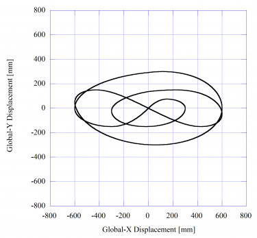
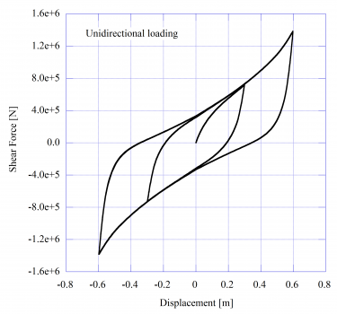
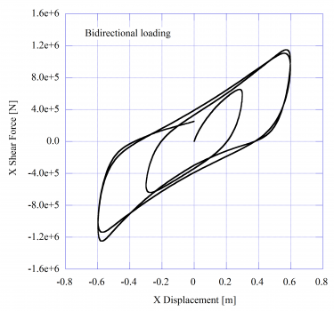
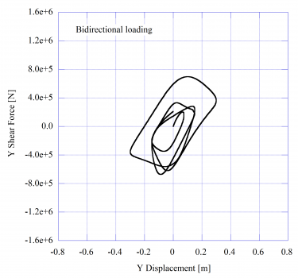

This command is used to construct a YamamotoBiaxialHDR element object, which is defined by two nodes. This element can be used to represent the isotropic behavior of high-damping rubber bearing in the local y-z plane.
element YamamotoBiaxialHDR $eleTag $iNode $jNode $Tp $DDo
$DDi $Hr <-coRS $cr $cs> <-orient <$x1 $x2 $x3> $y1 $y2
$y3> <-mass $m>
eleTag |
unique element object tag |
|
end nodes |
Tp |
compound type |
= 1 : X0.6R manufactured by Bridgestone corporation. |
|
DDo |
outer diameter [m] |
DDi |
bore diameter [m] |
Hr |
total thickness of rubber layer [m] |
Optional Data |
|
|
coefficients for shear stress components of $\tau_{r}$ and <math>\tau_{s}</math> |
|
vector components in global coordinates defining local x-axis |
|
vector components in global coordinates defining vector yp which lies in the local x-y plane for the element |
m |
element mass [kg] |
NOTES:
1) The valid queries to a YamamotoBiaxialHDR element when creating an ElementRecorder object are 'globalForce', 'localForce', 'basicForce', 'localDisplacement' and 'basicDeformation'.
Examples
element YamamotoBiaxialHDR 1 1 2 1 1.300 0.030 0.261 -orient 0 0 1 1 0 0
 
 
References
Masashi Yamamoto, Shigeo Minewaki, Harumi Yoneda and Masahiko Higashino, "Nonlinear behavior of high-damping rubber bearings under horizontal bidirectional loading: full-scale tests and analytical modeling", Earthquake Engineering and Structural Dynamics, 41, 1845-1860, 2012.
Code Developed by: mkiku